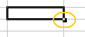

UF4. Fulls de càlcul
G rapida - emplenar
Emplenar rangs
L'opció d'emplenament automàtic i el comandament Edita | Emplena | Sèries permet emplenar rangs de cel·les amb dades de forma automàtica.
Emplenament automàtic
Genera una sèrie de dades basada en un patró definit.
- Escriviu un nombre en una cel·la del full
- Feu clic en una altra cel·la i, tot seguit, torneu a fer clic en la cel·la on heu escrit el nombre
- Arrossegueu el manejament de la cel·la (quadrat petit visible a la part inferior dreta de la cel·la),

en vertical o en horitzontal, per les cel·les a emplenar - Deixeu anar el botó del ratolí. El rang s'emplenarà amb nombres en ordre ascendent a partir del primer.
- Per crear una llista de dies consecutius, introduïu dilluns (o un altre dia de la setmana) en la primera cel·la i arrossegueu el manejament de la cel·la
- Per crear una llista de mesos consecutius, introduïu gener (o un altre mes de l'any) en la primera cel·la i arrossegueu el manejament de la cel·la
Si seleccioneu dues o més cel·les adjacents que continguin nombres i arrossegueu el manejament, les cel·les s'emplenen seguint el patró aritmètic dels primers nombres.
Emplenar sèries
- Seleccioneu el rang de cel·les a emplenar
- Demaneu l'opció de menú Edita | Emplena | Sèries…

- Seleccioneu els paràmetres de la sèrie
Si escolliu Sèrie lineal, l'increment que especifiqueu s'afegirà a cada un dels valors per generar la sèrie
Si escolliu Sèrie geomètrica, l'increment que especifiqueu es multiplicarà per cada un dels valors per generar la sèrie
Si seleccioneu una Serie de data l'increment que especifiqueu s'afegirà a cada un dels valors de data per generar la sèrie